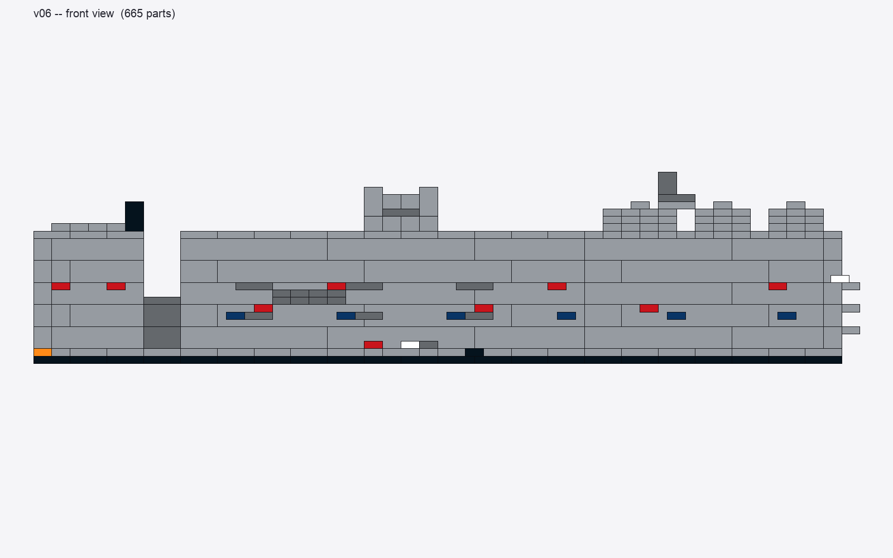
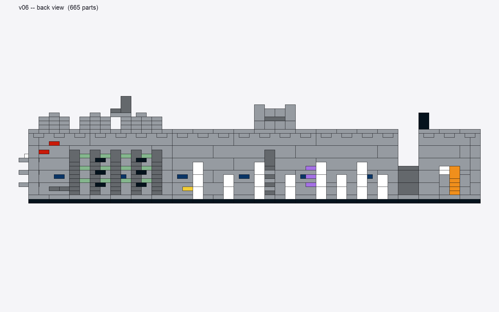
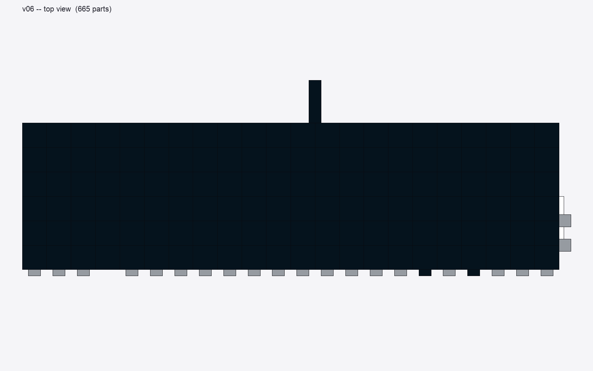
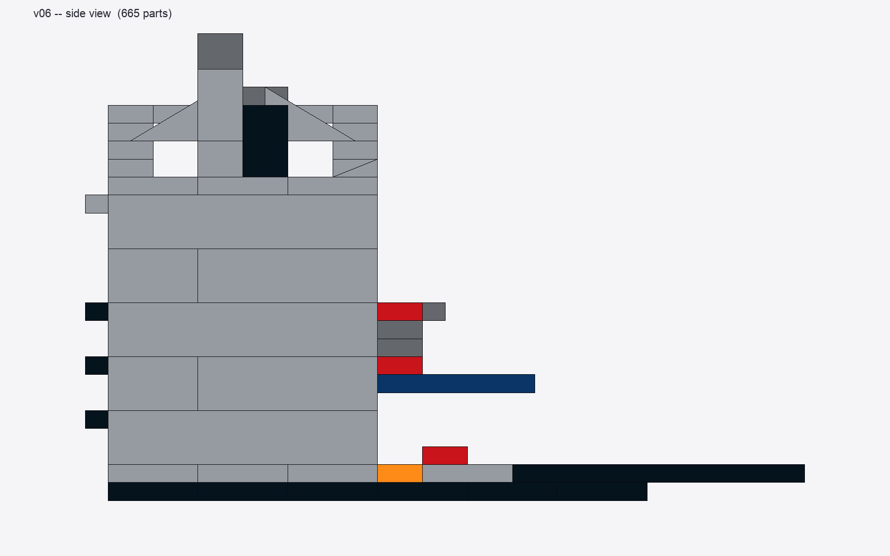
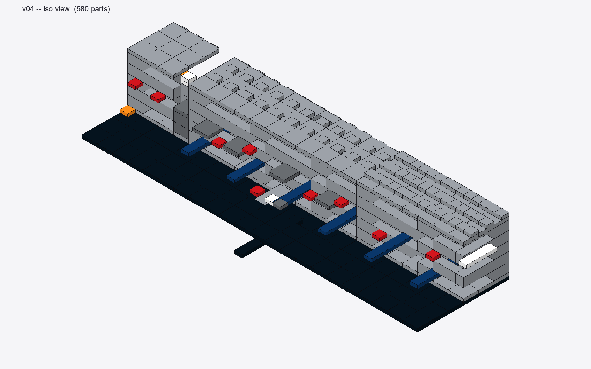
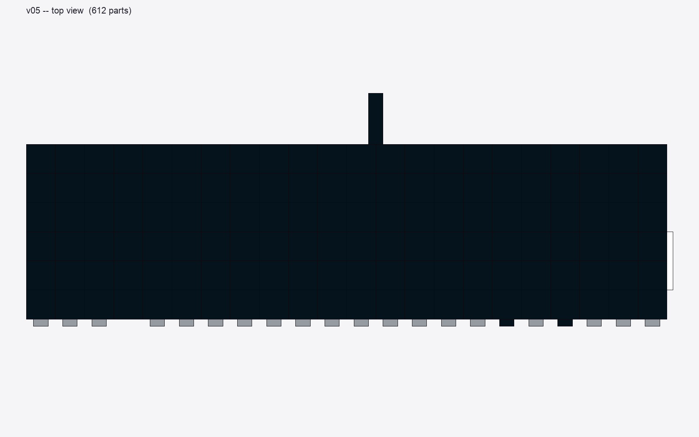

Code-driven original Lego MOC inspired by the official ASML employee-exclusive
TWINSCAN EXE:5000C kit. Designed in pure Python, rendered headless. Iterating
for fidelity, not part count.
Isometric. Module A's black antenna spire (top-left), Module C's dashboard housing with twin antennas, Module D's open server-rack roof architecture, radar dish on right end.

Front orthographic. 2 rows × 3 vacuum-chamber view-ports, dark service window, dark-blue band, red indicators, side vent grilles, ASML name tile.

Back orthographic — diorama interior. Trans-orange plasma chamber (right), 8 white service cabinets with handles, Power Burst zig-zag EUV beam, yellow e-stop, vacuum pump tower with green LEDs.

Top-down. Grille tile vents on Module C, dashboard housing centered, server-rack frames on D roof, radar dish.

Right side. Module D's right wall with side vent grilles and ASML wordmark placeholder.
Version history
Each version pushed shape-fidelity further, not just part count.
v0.4 — initial diorama (580 parts)

v0.4 isometric. Stepped silhouette, running-bond walls, but mostly flat tops. Cheese-slope crown on D was sprinkled randomly.
v0.5 isometric. Added Module C dashboard housing with 45° slopes, Module D stepped tier roof with sloped perimeters, antenna spires. Renderer upgraded to draw slopes as actual triangular prisms.

v0.5 top-down showing the new sloped ridges.
v0.6 — fidelity match against reference photos (665 parts) current
v0.6 isometric. Open server-rack architecture replaces stepped tiers on Module D (matches the reference's industrial open-frame silhouette). Black antenna spire on Module A. Vacuum view-ports re-arranged to 2 rows × 3 cols.v0.6 interior. Power Burst zig-zag pieces (part 11302) replace round-plate proxies for the EUV beam path.
Changelog
v0.4 → v0.5: added LDraw slope/wedge/antenna parts to the parts library; replaced flat roofs with sloped/stepped tiers on D and a sloped dashboard housing on C; renderer upgraded to draw slopes as triangular prisms (high-edge detected from rotation matrix).
v0.5 → v0.6: Module D roof rebuilt as open server-rack frame architecture (3 freestanding rack frames with front/back walls + roof bars). Module A black antenna spire. Vacuum chambers 2×3 grid. Service window on Module C front. Side vent grilles on Module D right wall. Power Burst (11302) zig-zag pieces for EUV beam path.
Build steps
Cumulative model state after each step in the v0.4 build (older snapshot — refreshed when v0.7 lands). Click any to view full size.